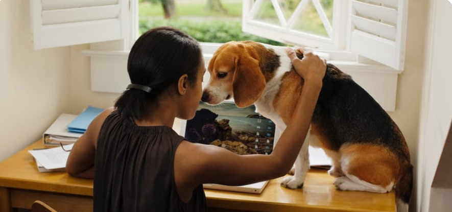

An important part of keeping fit and healthy is to take care of your own mental health. There are plenty of things you can do to help make sure you keep yourself mentally healthy.
Try these tips to keep your balance, or re-balance yourself.
 Author: CatherineStay mentally healthy by following these simple steps
Author: HelenEating healthy can help you lose weight and have more energy.It can also improve your mood and reduce your risk of disease
Author: Changjie